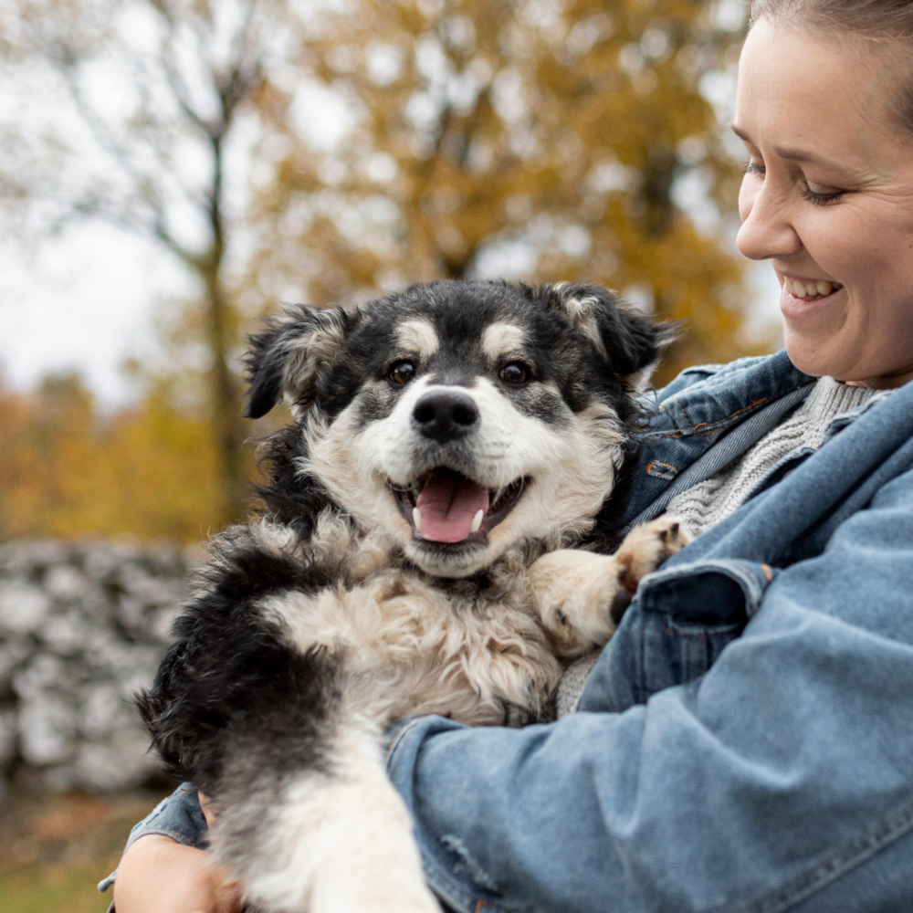

Zachraňujeme životy
Jeden ocásek po druhém
Naše útulky poskytují bezpečné útočiště pro opuštěná a týraná zvířata. S láskou a péčí jim pomáháme najít nové domovy a šťastné konce.

Adopce
Dejte domov opuštěnému zvířeti a změňte mu život k lepšímu. Prozkoumejte naše adoptovatelné mazlíčky a najděte svého nového nejlepšího přítele.
AdoptovatPřispějte
Vaše dary pomáhají zachraňovat životy. Každý příspěvek, ať už velký nebo malý, má význam a pomáhá nám pokračovat v naší misi.
Přispět